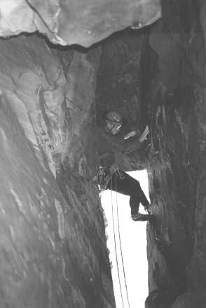

Few climbs bring as much adventure to a weekend as Preposterous Tales. The first ascentionists (so it is rumoured) abseiled down to sea level, pulled down their ropes, and disappeared into the narrow opening of a ferocious sea cave, never to be seen again....for about two hours, when they emerged out of a blow hole forty feet back from the edge of the cliff. Not long after, the route was the scene of a dramatic rescue when a climber dislocated his shoulder and had to be helicoptered out. Unsurprisingly, this route grabbed Stu's attention like, errr well like a climb that says 'you too can have an epic', and as soon as our exams had finished Matt, Stu and Myself boarded a bus to drive down to Pembrokeshire. Things were looking promising until we passed Addenbrookes, when I realised that I had left my climbing shoes (both pairs) in my room - it was going to be one of those weekends.
We couldn't get onto the cliffs for the first couple of days as the Army was using them for target practice. But finally, after sweet talking a sentry, we were allowed onto the crag for three hours between manoeuvres. We promised the sentry that we would be back in plenty of time, as he wasn't really allowed to let us onto the range. We ran off down the path full of excitement - a real adventure, and we could even be shot!
The only thing that we knew about the climb was that it traversed into a cave and emerged out of a blow hole. We were hard. We could repeat it in true first-ascent style, and with the added pressure of knowing that shortly a shell might be falling down the blow hole for added interest.
We geared up quickly, threw down my rope as an abseil and then abseiled down to a sloping ledge 15ft above the sea. We were so organised - I would find belay points as the first down, Matt would work out where to take the best pictures from, and Stu would worry about where the route actually went, cos we decided that he should take the first pitch. this plan was immaculate in its conception and operation, until we were all on the ledge and realised that no-one had brought the ropes down with them! Aaaaaaahh. One 40m prussik and a very fast abseil later and we were ready. The time is 5.30 - one and a half hours gone! Matt, being the gent that he is, decided that we would have a much better chance of completing the climb if he didn't join us, and so that left the climb for me and Stu.
Stu quickly disappeared off onto the overhanging traverse and I was left alone with my thoughts. They mostly involved romantic notions of a maze of death, twists and turns to be negotiated through limestone tunnels with cavernous drops and dramatic dynos leading to a rebirth into the world at the top of the cliff. I could hear the crowds cheering my heroics. The chants of 'Matthew, Matthew' floating across the waves. Suddenly I realised that the voice was Stu's, and that the mermaid wasn't going to offer her services to me. Damn. Well, with only a few meters of rope left I assumed that Stu was telling me he was safe, so I took him off belay. Serve him right if he wasn't. Damn fine daydream.
Overhanging traverses have always been fun, and this one had real spice. Stu's gear was well spaced (out) and the grade of the climbing was unknown to me. I pretended as I swung from pinch to jam to jug that I was flashing E3. A quick hop, match, pull through, smear, hook, and soon I was at the entrance to the cave. Suddenly the rock took on glass like properties, and with great jamming, careful footwork, and a cunning helmet placement I established myself at the mouth.
Now, this is no ordinary cave - it has no bottom. The entrance is actually like the bottom of a hanging flared offwidth (about 3 feet 'off') crack, 50 feet above a very angry sea. Still, I could see Stu's headtorch dimly about 30 feet away, and there was a lovely big ledge 10 feet away where the cave pinched in on itself. just 10 feet of bridging on glass with no footholds. Me scared? Huh, I'm insulted you even asked.
Shortly, after Stu had managed to prise my fingers from their vice-like grip around his arm, I looked at the cavern. The slimy (well, polished) passage that was our cave opened out into a truly massive cavern. From where we were we could see an overhanging wall rising up opposite our exit. We could see nothing else. Gingerly I tried to get closer to the edge, but the rock was too slimy, and I wasn't brave enough to bridge. Suddenly we had a thought. What was the time? What, 6.30? Aaaaarrrrrggghh. Half an hour till execution.
There followed the most fluid, smooth and stylish reversal of the first pitch by myself (helped by a bomb proof (sic) thread I found at the entrance to the cave), followed rapidly by Stu. Another quick prussik and we were at the top to find Matt still waiting for us. What a guy - 15 minutes into the Army manoeuvre and he was still in the firing line waiting for us. Junk into bags and we were off at double time, the echoes of the waves in the cavern laughing at us.
At 7.35 pm, with shells and hot lead flying all around us we raced off the firing range to a grinning sentry, who just looked at his watch and said 'Just in time lads, live firing in five minutes'.
Epilogue
Preposterous Tales beat off Stu and Matt again the next day with high seas. It finally succumbed at the end of the summer to Matt and myself when we cheated and used the guide book!

Matt braving the glassy bridging on Preposterous Tales
Photo: Matthew Brown